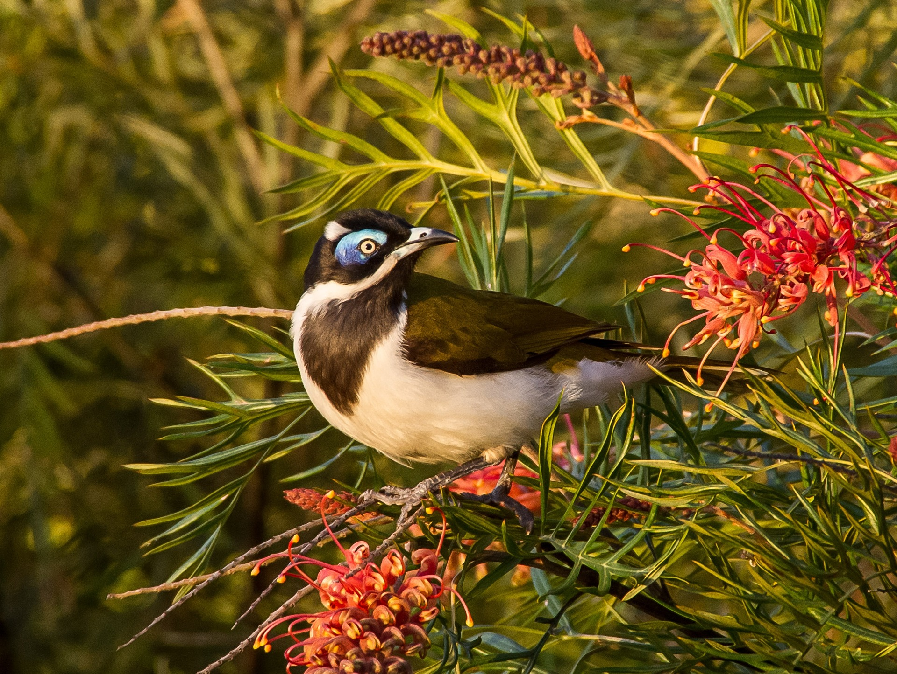
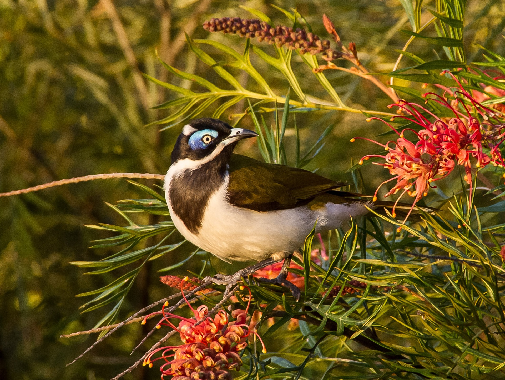
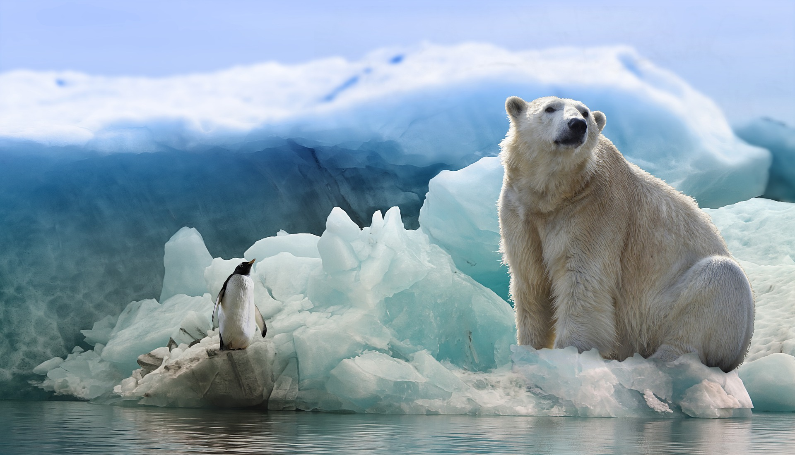
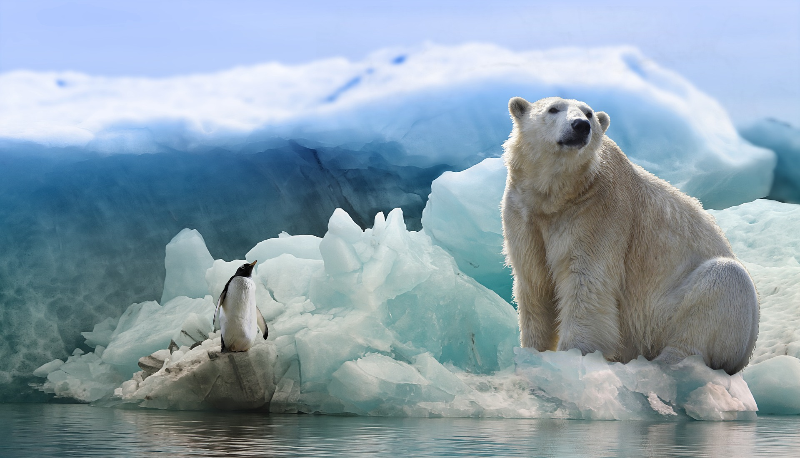

DESTINOS MÁS POPULARES
en The Bermudas Triangle Travel

Estados Unidos...
Rutas por Arizona, Roswell... ¿Quién no ha querido alguna vez visitar las grandezas y los misterios que entraña el "nuevo mundo"?
En 1947, unos restos metálicos sin origen claro agitaron Roswell, para unos, extraterrestres, para otros, teorías de la conspiración pero ambos coinciden de visita turística en la sede mundial del ovni
 
Australia...
Uno de los países más grandes del mundo que alberga descubrimientos asombrosos que te dejarán sin palabras.
Empezando por ser el único país que no tiene un volcán activo, los expertos creen que la evidencia más antigua de vida en la Tierra, puede descubrirse en esta tierra mítica.
 

Antártida...
Adentraté en nuestro barco, el Nostromo y descubre insectos gigantes, lagos de lava y hasta continentes perdidos. Estas son algunas de las rarezas que existen en la Antártida.
Hacemos un recuento de 7 misterios que guardan sus profundidades.